IF=15.8| TRIM29在PDAC中通过MEK/ERK途径促进吉西他滨耐药
原文：https://mp.weixin.qq.com/s?__biz=MzAwMzIzOTk5OQ==&mid=2247529474&idx=1&sn=8335b3114b6e6a0b811c1981e1eb02e2&chksm=9b3c0d52ac4b84444c781dc60b3bb6ba30c2f614c1b65c1672e18a9d495af72d448e15fa7fb0#rd 合集：文献速递
一、写在前面
本次分享的是2024年发布于《Drug Resist Updat》（IF=15.8）的文章****，**** 感兴趣的同学可以看看原文："TRIM29 facilitates gemcitabine resistance via MEK/ERK pathway and is modulated by circRPS29/miR-770-5p axis in PDAC"。这也是一篇以湿实验为主的文章，看来我们的常态化实验学习开展还是有必要的，大家不妨看看：实验基地六月课表。
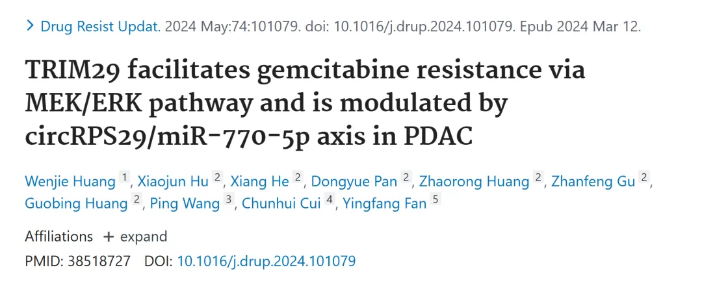
胰腺导管腺癌（PDAC）作为一种预后极差的恶性肿瘤，其治疗面临诸多挑战，尤其是吉西他滨（GEM）耐药性的普遍存在显著限制了化疗效果。近年来，分子机制研究揭示了 TRIM29（三方基序含蛋白 29）在癌症中的重要作用，但其在 PDAC 吉西他滨耐药中的具体功能尚未完全阐明。本文通过整合生物信息学分析与实验验证，系统探讨了 TRIM29 在 PDAC 中的表达特征及其通过 MEK/ERK 信号通路促进吉西他滨耐药的机制， 同时发现了 circRPS29/miR-770-5p 轴作为其上游调控网络的关键角色。 这一研究不仅为 PDAC 耐药性的分子基础提供了新的见解，也为开发针对耐药性的新型干预策略奠定了理论基础。以下笔记将围绕文章的核心发现展开，旨在为读者提供一个清晰的阅读框架。
如果需要数据分析指导 、生信热点全文复现 、自测数据个性化分析 辅导、常态化实验学习，欢迎联系客服微信[Biomamba_zhushou]
**二、结果介绍 **
1. TRIM29 在 PDAC 组织中过表达且与预后呈负相关
为了研究胰腺导管腺癌（PDAC）中潜在的致癌分子及其临床意义，作者通过分析多个公开数据库中的数据，包括GEO数据集（GSE15471、GSE16515、GSE62452）和TCGA数据库，发现TRIM29在PDAC组织中的mRNA表达水平显著高于相邻的非肿瘤组织（图1A-C）。随后，利用TCGA数据库中的临床数据进行生存分析，结果表明高TRIM29表达与PDAC患者的不良生存率密切相关（图1D）。为进一步验证TRIM29在蛋白水平上的表达情况，研究人员在PDAC组织的组织微阵列（TMA）上进行了免疫组织化学（IHC）染色实验。IHC结果显示，TRIM29蛋白在PDAC组织中的表达显著上调（图1E），与mRNA水平的数据高度一致。这些发现表明TRIM29在PDAC中呈现过表达状态，并且与患者的预后呈负相关 ，提示TRIM29可能作为PDAC的预后标志物，为后续的诊断和治疗研究提供潜在靶点。
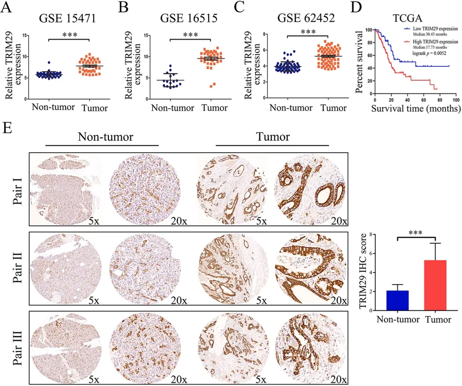
图1
2. TRIM29 与吉西他滨耐药性相关
研究者通过基因集富集分析（GSEA）对 GEO 数据集（GSE15471、GSE16515、GSE62452）和 TCGA 数据库进行分析，发现 TRIM29 的高表达与吉西他滨耐药相关的基因富集特征显著相关（图 2A-D）。进一步，团队成员在 PDAC 吉西他滨耐药细胞系（SW1990-GR 和 PANC-1-GR）中进行了实验，结果显示，与其母本细胞（SW1990 和 PANC-1）相比，耐药细胞对吉西他滨的半数抑制浓度（IC50）显著升高（图 2E-F）。通过敲低 TRIM29 基因，研究人员发现吉西他滨的 IC50 显著降低（图 2G），而过表达 TRIM29 则进一步增加 SW1990-GR 和 PANC-1-GR 细胞的 IC50（图 2H）。这些结果表明，TRIM29 在 PDAC 吉西他滨耐药性中起关键作用 ，提示其可能作为调控耐药性的重要分子靶点。
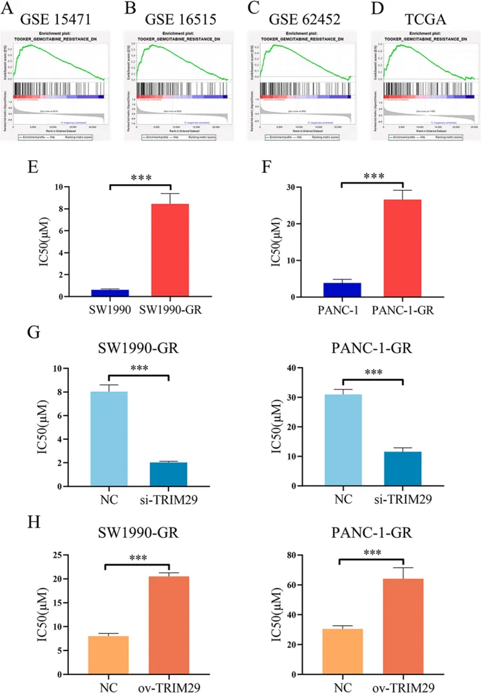
图2
3. TRIM29 在体外促进吉西他滨耐药性
通过在 SW1990-GR 和 PANC-1-GR 细胞中分别转染 TRIM29 过表达质粒和 siRNA（si-T29），并通过多项功能实验进行评估。Western blot 验证显示，过表达质粒显著上调 TRIM29 表达，而 siRNA 有效降低其表达（补充图 1）。集落形成实验表明，TRIM29 过表达显著增强细胞增殖能力，而敲低则抑制集落形成（图 3A）。EdU 实验进一步显示，TRIM29 过表达促进 DNA 合成，而敲低抑制 DNA 合成（图 3B）。流式细胞术分析结果表明，TRIM29 过表达加速细胞周期从 G0/G1 期向 S 期的进程，而敲低则导致细胞周期阻滞（图 3C）。此外，Transwell 实验证实，TRIM29 过表达增强细胞侵袭能力，而敲低抑制侵袭（图 3D）。这些结果共同表明，TRIM29 在体外通过促进细胞增殖、DNA 合成、细胞周期进程和侵袭能力，显著增强 PDAC 细胞对吉西他滨的耐药性。
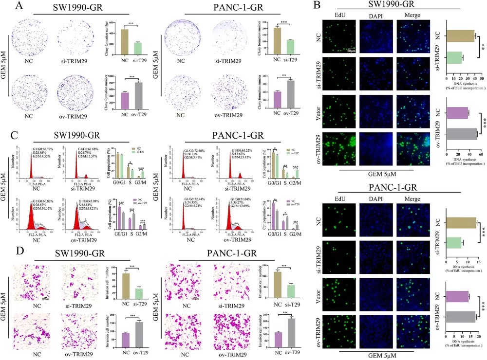
图3
4. TRIM29 与 MEK/ERK 信号通路相关
为探究 TRIM29 对 MEK/ERK 信号通路的调控作用，研究人员基于 GSE15471、GSE16515、GSE62452 和 TCGA 数据集的 GSEA 分析，发现 TRIM29 过表达与 MEK/ERK 通路相关基因的富集特征显著相关（图 4A-D）。在 SW1990-GR 和 PANC-1-GR 细胞中，研究者通过过表达和敲低 TRIM29，检测其对 MEK/ERK 通路的影响。Western blot 结果显示，TRIM29 过表达显著上调磷酸化 MEK（pMEK）和磷酸化 ERK（pERK）的水平，而敲低 TRIM29 则显著降低 pMEK 和 pERK 的表达（图 4E-F）。这些结果表明，TRIM29 通过激活 MEK/ERK 信号通路，增强 PDAC 细胞的耐药性和肿瘤生物学行为。
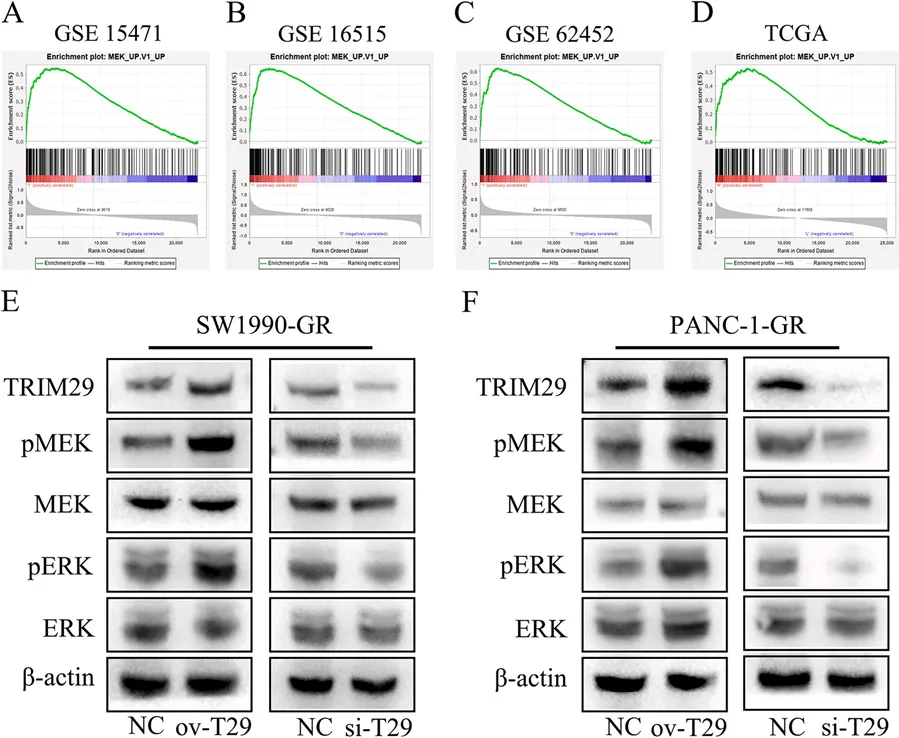
图4
5. 通过生物信息学分析预测 circRPS29/miR-770-5p/TRIM29 轴
作者通过生物信息学分析预测可能调控 TRIM29 的 circRNA 和 miRNA，用于探索 TRIM29 表达的上游调控机制。基于 GEO 数据集（GSE41369），发现 miR-770-5p 在 PDAC 组织中表达下调（图 5A），且 TCGA 数据显示 miR-770-5p 与 TRIM29 表达呈负相关（图 5B），低 miR-770-5p 表达与较差的生存率相关（图 5C）。通过分析 TRIM29 mRNA 的 3'UTR，确认了 miR-770-5p 的结合位点（图 5D）。进一步通过 ENCORI 平台筛选，确定 circRPS29（circBase ID: hsa_circ_0031773）为 miR-770-5p 的潜在上游调控因子（图 5E）。qRT-PCR 结果显示，circRPS29 在 PDAC 组织中表达上调，且高表达与不良生存率相关（图 5F-G）。琼脂糖凝胶电泳验证了 circRPS29 的环状结构，仅在 cDNA 中扩增到产物（图 5H）。这些结果初步建立了 circRPS29/miR-770-5p/TRIM29 调控轴， 为后续机制验证提供了理论基础。
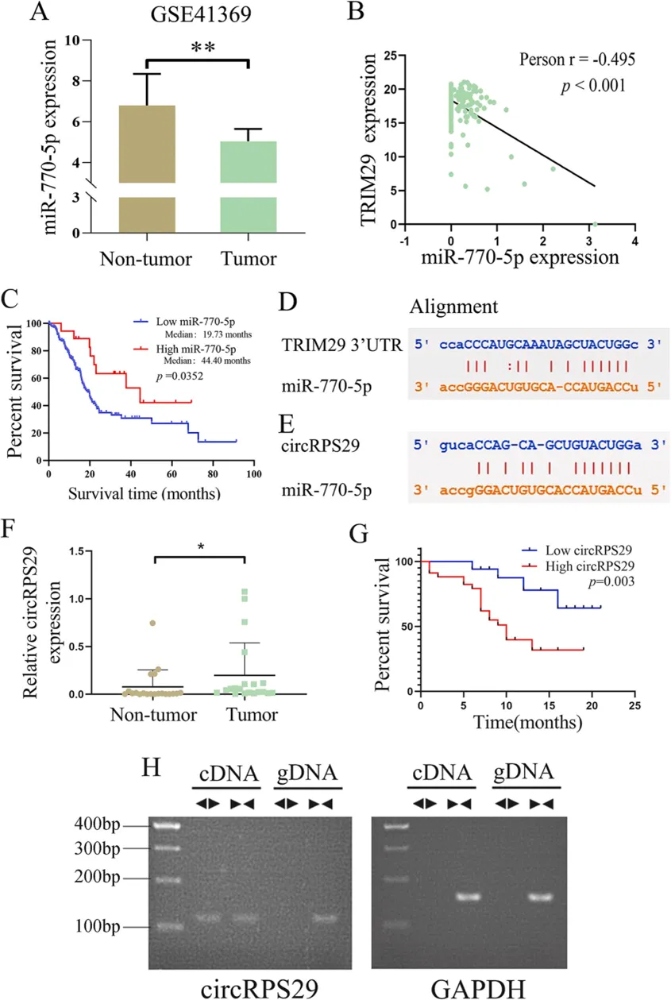
图5
6. circRPS29/miR-770-5p/TRIM29-MEK/ERK 信号轴的机制验证
为验证 circRPS29/miR-770-5p/TRIM29 轴的调控机制，研究人员又进行了双荧光素酶报告基因实验，构建了携带 circRPS29 和 miR-770-5p 或 TRIM29 mRNA 3'UTR 结合位点的野生型（WT）和突变型（MT）质粒。结果显示，miR-770-5p 模拟物显著降低 WT 质粒的荧光素酶活性，而 MT 质粒无显著变化（图 6A, 6E）。RNA 免疫沉淀（RIP）实验表明，circRPS29、miR-770-5p 和 TRIM29 mRNA 在 AGO2 复合物中显著富集（图 6F）。RNA pull-down 实验进一步确认，circRPS29 和 TRIM29 mRNA 在 miR-770-5p pull-down 复合物中富集（图 6G）。Western blot 分析显示，circRPS29 敲低或 miR-770-5p 过表达抑制 TRIM29、pMEK 和 pERK 表达，而 miR-770-5p 抑制剂逆转了 circRPS29 敲低的抑制效应；相反，circRPS29 过表达或 miR-770-5p 抑制上调这些蛋白水平（图 6H-I）。这些结果证实，circRPS29 通过竞争性结合 miR-770-5p 上调 TRIM29 表达，进而激活 MEK/ERK 通路。
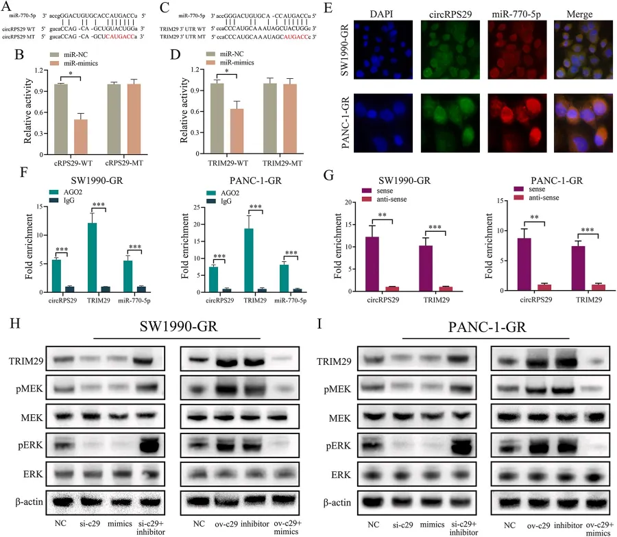
图6
7. miR-770-5p 抑制剂逆转 circRPS29 敲低对吉西他滨耐药性和 MEK/ERK 通路激活的抑制作用
研究团队在吉西他滨处理的 PDAC-GR 细胞中进行了功能相关实验，验证 circRPS29 通过 miR-770-5p 调控耐药性。集落形成实验显示，circRPS29 敲低抑制集落形成，而 miR-770-5p 抑制剂恢复了这一能力（图 7A）。EdU 实验表明，circRPS29 敲低抑制 DNA 合成，miR-770-5p 抑制剂逆转此效应（图 7B）。流式细胞术分析显示，circRPS29 敲低诱导细胞周期停滞，miR-770-5p 抑制剂缓解停滞（图 7C）。Transwell 实验表明，circRPS29 敲低抑制侵袭能力，miR-770-5p 抑制剂消除了这一抑制（图 7D）。Western blot 结果显示，circRPS29 敲低降低 TRIM29、pMEK 和 pERK 表达，而 miR-770-5p 抑制剂逆转了这些变化（图 7E）。这些结果表明，circRPS29 通过 miR-770-5p 调控 TRIM29 和 MEK/ERK 通路，促进吉西他滨耐药性。
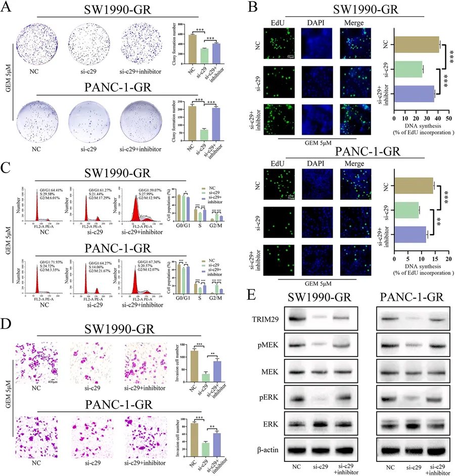
图7
8. TRIM29 拯救 circRPS29 敲低对吉西他滨耐药性和 MEK/ERK 通路激活的抑制作用
通过在 PDAC-GR 细胞中共同转染 circRPS29 siRNA 和 TRIM29 过表达质粒，验证TRIM29 是否为 circRPS29 的下游效应因子。集落形成实验显示，TRIM29 过表达逆转了 circRPS29 敲低对集落形成的抑制（图 8A）。EdU 实验表明，TRIM29 过表达恢复了 circRPS29 敲低抑制的 DNA 合成（图 8B）。流式细胞术分析显示，TRIM29 过表达逆转了 circRPS29 敲低引起的细胞周期停滞（图 8C）。Transwell 实验表明，TRIM29 过表达增强侵袭能力，抵消了 circRPS29 敲低的抑制作用（图 8D）。Western blot 结果显示，TRIM29 过表达逆转了 circRPS29 敲低引起的 pMEK 和 pERK 表达降低（图 8E）。这些结果表明，circRPS29 通过上调 TRIM29 促进吉西他滨耐药性和 MEK/ERK 通路激活。
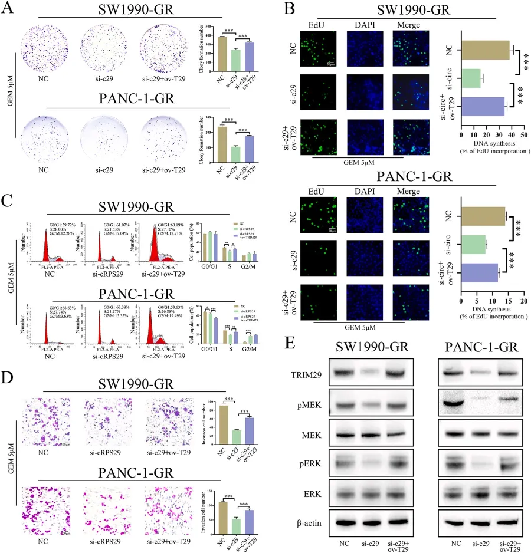
图8
9. MEK 抑制剂消除了 circRPS29 对吉西他滨耐药性的促进作用
为验证 circRPS29 是否通过 MEK/ERK 通路调控耐药性，作者在 circRPS29 过表达的 PDAC-GR 细胞中加入 MEK 特异性抑制剂（HY-50706）。集落形成实验显示，MEK 抑制剂抑制了 circRPS29 过表达对集落形成的促进作用（图 9A）。EdU 实验表明，MEK 抑制剂消除了 circRPS29 过表达对 DNA 合成的促进作用（图 9B）。流式细胞术分析显示，MEK 抑制剂逆转了 circRPS29 过表达对细胞周期的加速作用（图 9C）。Transwell 实验表明，MEK 抑制剂抑制了 circRPS29 过表达增强的侵袭能力（图 9D）。Western blot 结果显示，MEK 抑制剂降低 circRPS29 过表达引起的 pMEK 和 pERK 表达增加（图 9E）。这些结果表明，circRPS29 通过激活 MEK/ERK 通路促进吉西他滨耐药性。
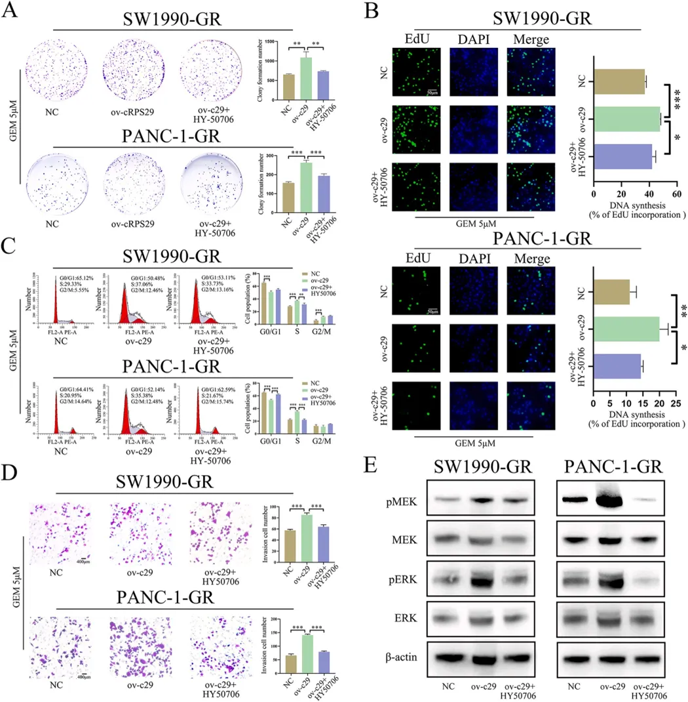
图9
10. circRPS29 在体内通过 miR-770-5p 促进 TRIM29 表达、MEK/ERK 通路激活和吉西他滨耐药性
最终，团队将 circRPS29 过表达细胞、miR-770-5p 上调细胞和阴性对照细胞皮下注射到裸鼠体内，验证 circRPS29 在体内对吉西他滨耐药性的影响。结果显示，circRPS29 过表达增加异种移植肿瘤的重量和体积，而 miR-770-5p 上调消除了这一效应（图 10A-C）。免疫组织化学（IHC）染色结果表明，circRPS29 过表达促进 TRIM29 表达和 pERK 磷酸化水平增强，而 miR-770-5p 上调逆转了这些变化（图 10D）。这些结果证实，circRPS29 在体内通过 miR-770-5p/TRIM29/MEK/ERK 轴促进 PDAC 吉西他滨耐药性 （图 10E）。
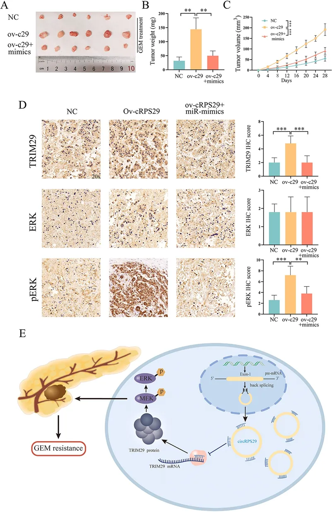
图10
三、最后聊聊
本文深入揭示了 circRPS29/miR-770-5p/TRIM29-MEK/ERK 信号轴在 PDAC 吉西他滨耐药中的核心作用 。研究表明，TRIM29 的异常高表达通过激活MEK/ERK 通路显著增强了 PDAC 细胞对吉西他滨的耐药性 ，而 circRPS29 作为 miR-770-5p 的“海绵”，间接上调 TRIM29 水平，从而驱动这一过程 。这一信号轴的发现，不仅丰富了我们对 PDAC 耐药机制的认识，还提示了其作为潜在治疗靶点的可能性。MEK/ERK 通路在肿瘤免疫调节中的作用日益受到关注，未来研究可进一步探讨该轴在 PDAC 免疫微环境中的功能，或为联合免疫治疗提供新思路。同时，针对 circRPS29 或 TRIM29 的小分子抑制剂开发，将是验证其临床转化价值的重要方向。本文的研究为 PDAC 的精准医学研究开辟了新的可能性，值得进一步关注与探索。
希望掌握实验实操技能的小伙伴不妨看看：实验基地六月课表

如何联系我们

 留一个领取资料、免费两周学习版服务器的微信号[Biomamba_zhushou]，方便各位随时交流。同时我们也构建了交流群矩阵，欢迎大家入群讨论。
大家可以阅读完这几篇之后添加给生信入门初学者的小贴士
没有检索，就没有发言权
留一个领取资料、免费两周学习版服务器的微信号[Biomamba_zhushou]，方便各位随时交流。同时我们也构建了交流群矩阵，欢迎大家入群讨论。
大家可以阅读完这几篇之后添加给生信入门初学者的小贴士
没有检索，就没有发言权
已有生信基地联系方式的同学无需重复添加

 您点的每个赞和在看，我都认真当成了喜欢
您点的每个赞和在看，我都认真当成了喜欢